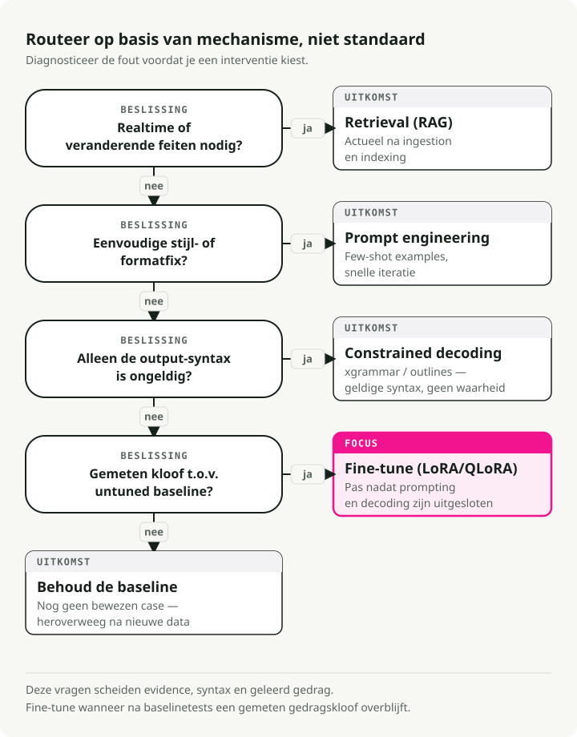
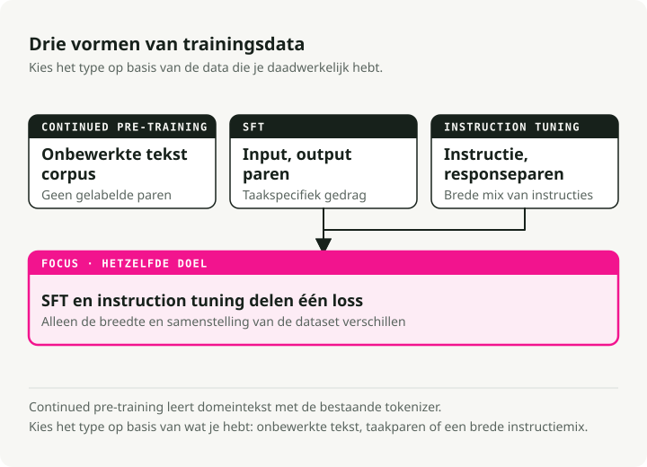
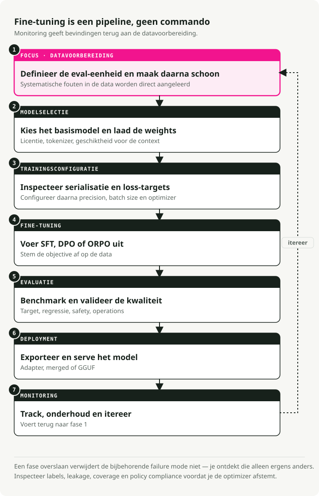
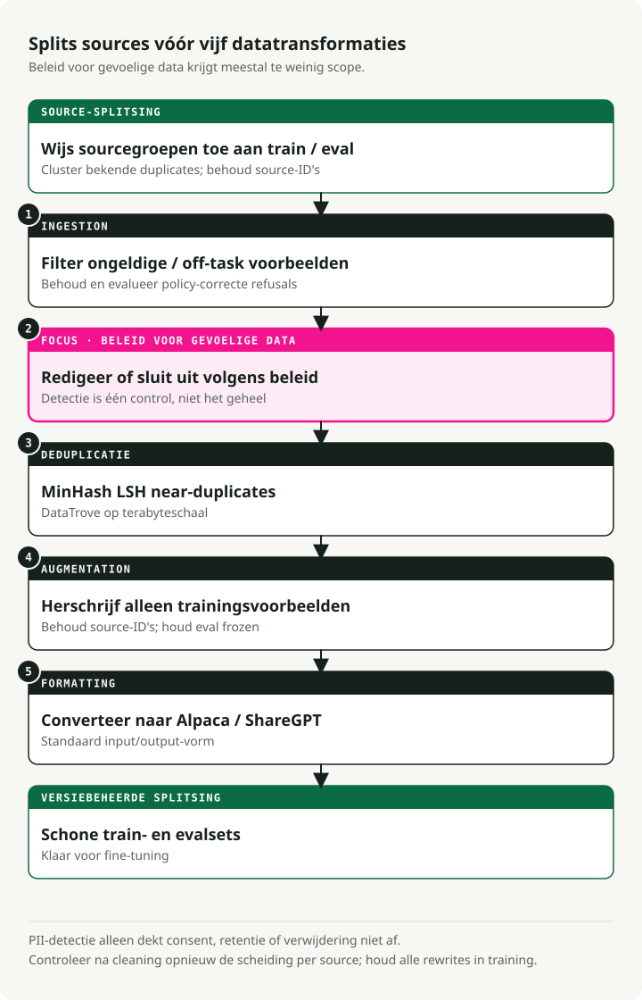
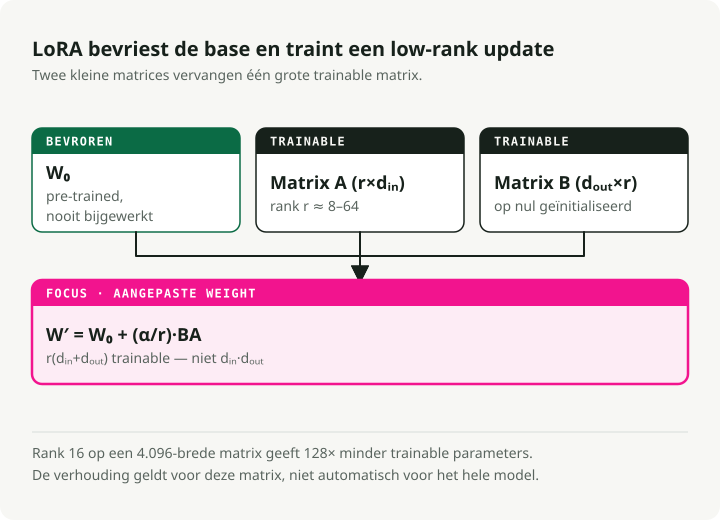
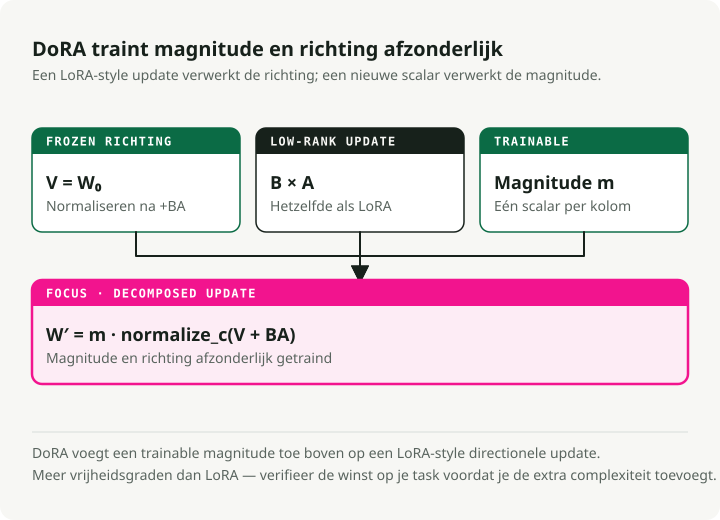
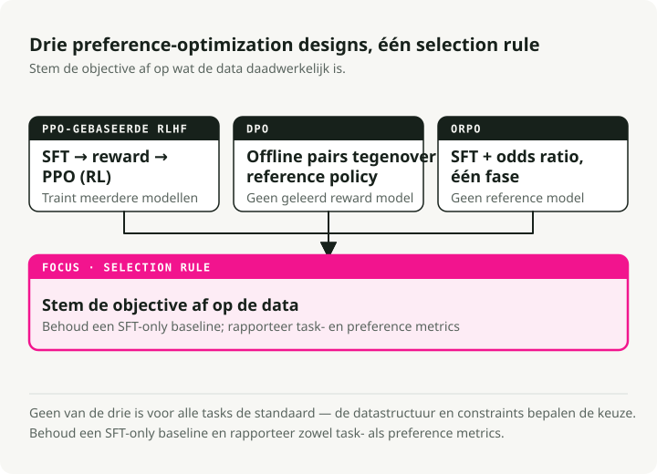
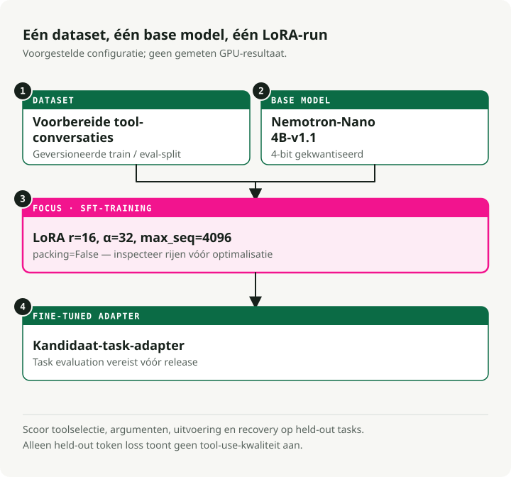
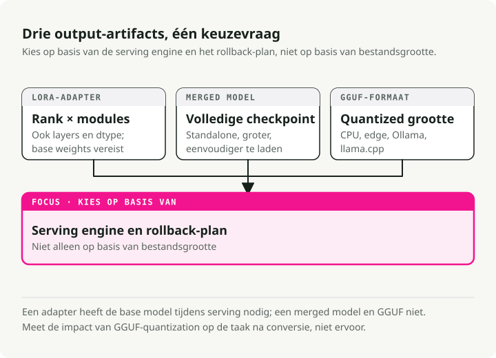

Automatische vertaling
Dit artikel is automatisch vertaald vanuit de oorspronkelijke Engelse versie.
Handleiding voor LLM-fine-tuning: LoRA, QLoRA, DoRA, Unsloth, Axolotl en deployment
De meeste fine-tuningprojecten die ik heb gezien, mislukken niet tijdens de training, maar in de stappen ervoor en erna: slechte data, het verkeerde basismodel, geen echte eval. De training zelf is het makkelijke deel. Deze gids is wat ik graag had willen hebben vóór mijn eerste serieuze fine-tune — wanneer je het wel moet doen, wanneer niet, welke methoden vandaag werken (LoRA, QLoRA, DoRA, ORPO), en hoe je een model van een notebook naar een serving-endpoint krijgt.
Moet je überhaupt fine-tunen?
Voordat je GPU-uren uitgeeft, moet je bepalen of fine-tuning wel het juiste gereedschap is voor het probleem dat voor je ligt.

Fine-tuning vs RAG
Fine-tune niet alleen om "kennis" toe te voegen. Gebruik in plaats daarvan deze scheiding:
| Feature | Fine-Tuning | RAG (Retrieval-Augmented Generation) |
|---|---|---|
| Core Function | Past interne gewichten aan om vaardigheden, stijlen of gedrag aan te leren | Levert externe, actuele context tijdens inferentie |
| Best For | • Specifieke conversatiestijlen • Complexe instructieopvolging • Domeinspecifiek redeneren |
• Snel veranderende data (nieuws, aandelenkoersen) • Hallucinaties verminderen (grounding) • Bronnen citeren |
| Knowledge Handling | Internaliseert patronen, geen feiten | Haalt feiten op uit een externe kennisbank |
| Update Frequency | Vereist retraining voor updates | Werkt direct bij met nieuwe documenten |
Fine-tuning vs prompt engineering
Moderne LLM's reageren opvallend goed op goed ontworpen prompts. Put prompting uit voordat je naar fine-tuning grijpt.
| Aspect | Fine-Tuning | Prompt Engineering |
|---|---|---|
| Setup Cost | Hoog (datacuratie, GPU-compute, iteratie) | Laag (iteratieve promptverfijning) |
| Flexibility | Vast na training | Op elk moment aanpasbaar zonder retraining |
| Format/Style | Beste voor complexe, consistente outputformats | Goed voor eenvoudige formatting met few-shot voorbeelden |
| Latency | Lager (geen lange system prompts) | Hoger (contextbelasting bij elke request) |
| Best For | Complex gedrag, distillatie, kosten op schaal | Snelle iteratie, veranderende requirements |
[!TIP] Probeer eerst prompting Begin met few-shot voorbeelden in de prompt. Als het gedrag nog steeds inconsistent is, probeer dan SGR voordat je naar fine-tuning grijpt.
Fine-tuning vs Schema-Guided Reasoning (SGR)
Libraries zoals xgrammar en outlines beperken modeloutputs tijdens inferentie met finite state machines. Ze werken direct met basismodellen, zonder training.
De waarde van SGR zit niet alleen in gestructureerde outputs. Het draait om consistentie: dezelfde inputvorm geeft elke keer dezelfde outputvorm, zonder iets te retrainen. Wanneer prompting alleen inconsistente resultaten oplevert, zet SGR het outputpatroon vast tijdens decode time.
| Aspect | SGR (No Fine-Tuning) | Fine-Tuning |
|---|---|---|
| Setup | Direct—schema definiëren, deployen | Vereist datacuratie, GPU-compute, iteratie |
| Consistency | Gegarandeerde structuur, betrouwbare patronen | Aangeleerd gedrag (kan nog steeds variëren) |
| Flexibility | Schema op elk moment wijzigen zonder retraining | Vast na training |
| Latency | Lichte overhead (model kan met schema "vechten") | Lager (model produceert format van nature) |
| Best For | Gestructureerde outputs, consistent gedrag | Complex redeneren, diepe gedragsveranderingen |
Een praktische volgorde:
- Begin met prompting en few-shot voorbeelden voor basisformattering.
- Voeg SGR (
xgrammarofoutlines) toe wanneer het format inconsistent is. - Fine-tune pas wanneer je gedragsveranderingen nodig hebt die een schema niet kan afdwingen.
Snelle referentie: problemen koppelen aan oplossingen
| Challenge | Best Solution | Why? |
|---|---|---|
| Missing knowledge | RAG | Modellen hallucineren feiten. Retrieval levert gegronde, actuele context |
| Wrong format/tone | Prompt Engineering | Moderne modellen volgen stijlinstructies goed via few-shot voorbeelden |
| Inconsistent outputs | SGR (xgrammar) | Gegarandeerde structuur en betrouwbaarheid zonder training |
| Complex behavioral changes | Fine-Tuning (SFT) | Diepe persona, redeneerpatronen of meerstapsworkflows |
| Safety/preference | Alignment (DPO) | Wanneer outputs inhoudelijk kloppen maar niet aansluiten op voorkeuren |
| Latency/cost at scale | Distillation (SFT) | Train een kleiner studentmodel op outputs van een grotere teacher |
| Reduce model size | Quantization | Geen training—comprimeer gewichten (FP16→INT4) voor snellere inferentie |
Wanneer de rekensom echt klopt
Fine-tuning loont wanneer traffic hoog is en requirements stabiel zijn. Een solide RAG-setup draagt vaak 2.000 tokens context mee bij elke call: system prompt, opgehaalde documenten, few-shot voorbeelden. Dat is een contextbelasting die je bij elke request betaalt.
Een fine-tuned model neemt de meeste van die instructies op in zijn gewichten, waardoor de prompt daalt van ~2.000 tokens naar ~50. Bij voldoende volume verdien je de trainingscompute in een paar weken terug.
[!TIP] De hybride setup Het patroon dat ik steeds opnieuw in productie zie: een fine-tuned 8B-model gecombineerd met een kleine RAG-retriever voor feiten. Dat verslaat vaak een geprompt 70B+-model op zowel nauwkeurigheid als kosten.
Soorten fine-tuning
Er zijn drie hoofdvormen van fine-tuning. Ze verschillen in het soort data dat ze nodig hebben en wat ze het model leren.

1. Continued pre-training (unsupervised)
Je traint het basismodel op meer ruwe tekst, zonder labels. Het blijft next-token prediction doen, net als tijdens de oorspronkelijke pre-trainingrun.
Wanneer je dit gebruikt:
- Het domein heeft vocabulaire dat het basismodel nooit heeft gezien (medisch, juridisch, interne codebases).
- Je hebt stapels domeintekst maar geen gelabelde (input, output)-paren.
- Het basismodel struikelt over domeinspecifieke terminologie.
Voorbeeld: trainen op miljoenen klinische notities zodat het model medische afkortingen, medicijnnamen en klinische workflows oppikt.
2. Supervised fine-tuning (SFT)
SFT traint op gelabelde (input, output)-paren. Je laat het model exact de output zien die je wilt voor elke input.
Wanneer je dit gebruikt:
- Je hebt een specifieke taak met een schoon input/output-format.
- Je hebt kwalitatief goede gelabelde data, ook in kleine hoeveelheden.
- Je hebt voorspelbaar gedrag nodig op een bekende inputvorm.
Voorbeeld: trainen op paren van (SQL-querybeschrijving, SQL-code) voor text-to-SQL.
{
"input": "Get all users who signed up last month",
"output": "SELECT * FROM users WHERE signup_date >= DATE_SUB(NOW(), INTERVAL 1 MONTH)"
}
3. Instruction tuning
Instruction tuning is een speciaal geval van SFT dat is ontworpen om modellen een brede variëteit aan natural-language instructies te laten volgen. De trainingsdata bestaat uit paren van (instruction, response) over veel verschillende taken.
Wanneer je dit gebruikt:
- Je wilt een general-purpose assistant (zoals ChatGPT of Claude).
- Het model moet omgaan met gevarieerde, open verzoeken.
- Je bouwt een chatinterface.
Voorbeeld: trainen op duizenden diverse instructies zoals "Vat dit artikel samen", "Schrijf een gedicht over X", "Leg Y eenvoudig uit."
Vergelijking
| Aspect | Continued Pre-training | SFT | Instruction Tuning |
|---|---|---|---|
| Data | Ruwe tekst | (input, output)-paren | (instruction, response)-paren |
| Labels | Geen (unsupervised) | Taakspecifiek | Diverse taken |
| Goal | Domeinkennis | Specifiek taakgedrag | Elke instructie volgen |
| Data Volume | Groot (miljoenen tokens) | Klein-Middel (500-10k voorbeelden) | Middel-Groot (10k-100k voorbeelden) |
[!NOTE] Wat mensen in de praktijk doen De meeste practitioners gebruiken SFT voor specifieke taken en instruction tuning voor chatassistenten. Continued pre-training is zeldzamer omdat het enorme hoeveelheden domeintekst en veel compute vereist.
De fine-tuningpipeline in 7 fasen
Fine-tuning is een pipeline, geen enkel commando. Elke fase heeft zijn eigen failure modes, en een fase overslaan zie je later meestal terug in een slecht model.

Elke fase bouwt voort op de vorige:
- Data preparation — Maak je data schoon, dedupliceer en formatteer deze (stap met de meeste impact)
- Model selection — Kies het juiste basismodel en laad de gewichten
- Training setup — Configureer hardware, hyperparameters en optimalisatiestrategie
- Fine-tuning — Voer SFT-, DPO- of ORPO-training uit
- Evaluation — Benchmark prestaties en valideer kwaliteit
- Deployment — Exporteer en serve je model
- Monitoring — Volg prestaties, onderhoud en itereer
[!WARNING] Data is de basis Fase 1 (data preparation) is de stap met de hoogste leverage. Algoritmen kunnen fouten in je trainingsdata niet repareren. 500-1.000 zorgvuldig gecureerde voorbeelden verslaan meestal 50.000 ruisachtige voorbeelden.
Fase 1: Data preparation
De meeste fine-tuningprojecten falen hier, niet tijdens training. Moderne datapreparatie is meer dan een regex over CSV's draaien.

De datapipeline in 5 fasen
Teams die dit serieus aanpakken vertrouwen op tools zoals DataTrove (Hugging Face) en Distilabel (Argilla) in plaats van maatwerkscripts.
1. Inname en filtering
- Action: verwijder weigeringen ("I cannot answer that"), kapotte UTF-8 en niet-doeltalen.
- Tools: Trafilatura voor extractie, FastText voor language ID.
2. PII-scrubbing (verplicht voor enterprise)
- Action: detecteer en redigeer e-mails, IP-adressen en telefoonnummers vóór training.
- Tools: Microsoft Presidio of scrubadub.
- Why: trainen op klant-PII is een security-incident in wording.
3. Deduplicatie (MinHash LSH)
- Action: verwijder near-duplicates zodat het model ze niet memoriseert.
- Tools: DataTrove verwerkt terabyte-schaal goed.
4. Synthetische augmentatie
- Action: gebruik een sterkere teachermodel (GPT-4o, DeepSeek-V3) om ruwe data om te schrijven naar schone instruction-response-paren.
- Tools: Distilabel.
- Why it matters: hier komt meestal de grootste kwaliteitswinst vandaan.
5. Formatting
- Action: converteer naar een standaardformat (Alpaca of ShareGPT).
Voorbeelden van dataformats
Alpaca-format (instruction-following):
{
"instruction": "Summarize the following text.",
"input": "The text to be summarized...",
"output": "This is the summary."
}
ShareGPT/ChatML-format (conversationeel):
{
"conversations": [
{ "from": "user", "value": "Hello, who are you?" },
{ "from": "assistant", "value": "I am a helpful AI assistant." }
]
}
Wat echt telt
- Kwaliteit boven kwantiteit. 500-1.000 zorgvuldig gecureerde voorbeelden verslaan 50.000 ruisachtige voorbeelden.
- Schoonheid. Verwijder irrelevante tekst, normaliseer whitespace, houd formatting consistent.
- Balans. Verdeel dekking over onderwerpen zodat het model niet overfit op het segment dat domineert.
- PII-scrubbing is niet onderhandelbaar voor elk productiesysteem.
Fase 2: Modelselectie en hardware
Het kiezen van het basismodel en het begrijpen van de minimale GPU-vereisten bepalen wat je daadwerkelijk kunt trainen.
Hardware per modelgrootte
Geheugen is de harde ondergrens. De cijfers hieronder gaan uit van training, niet inferentie.
| Tier | Hardware Config | Capability | Use Case |
|---|---|---|---|
| Enterprise Standard | 8x NVIDIA H100 (80GB) | Full Fine-Tuning | Training van 70B-modellen met lange context (32k+) op maximale snelheid |
| Minimum Viable (Pro) | 4x NVIDIA A100 (80GB) | QLoRA / LoRA | Fine-tuning van Qwen 72B of Llama 70B in 4-bit |
| Local R&D | 4x RTX 6000 Ada (48GB) | QLoRA | On-prem workstation voor dataprivacy-eisen |
| Hobbyist/Indie | 1-2x RTX 3090/4090 (24GB) | QLoRA | Fine-tune 7B-32B-modellen met parameter-efficiënte methoden |
[!TIP] Consumer-GPU's komen verder dan je denkt Met QLoRA en Unsloth kan een enkele RTX 4090 (24GB) modellen tot 32B parameters fine-tunen. De 3090 is nog steeds solide voor 7B-13B-training. De 24GB-VRAM-klasse is genoeg voor het meeste serieuze werk buiten long-context-territorium.
[!NOTE] Waarom H100's De hoofdreden is niet VRAM, maar FP8-precisie. H100's ondersteunen native FP8-training, wat effectief geheugen en throughput ruwweg verdubbelt ten opzichte van A100's. Voor contexten van 128k tokens is FP8 op H100's vaak de enige manier om een redelijke batch size passend te krijgen.
Geheugenrekensom
Om een 72B-model te fine-tunen, moet de GPU het volgende vasthouden:
- Modelgewichten op 16-bit precisie: ~144 GB.
- Gradiënten en optimizer-state: ongeveer 2-3× de modelgrootte, afhankelijk van de optimizer (AdamW zit aan de hoge kant).
- Activaties: groeit met contextlengte, bijvoorbeeld 32k tokens.
Dit is waarom QLoRA (4-bit basis + LoRA-adapters) voor de meeste teams de praktische standaard is.
Fase 3: Trainingsmethoden (PEFT en LoRA)
Full fine-tuning vs PEFT
Full fine-tuning (FFT) werkt elke gewicht bij. Een 7B-model op 16-bit precisie heeft al rond de 112GB VRAM nodig om alleen al te trainen. Dat ligt buiten bereik voor de meeste teams.
Parameter-efficient fine-tuning (PEFT) traint alleen een kleine subset van parameters en bevriest de rest. De rekensom wordt een stuk vriendelijker.
LoRA: de standaard
LoRA (Low-Rank Adaptation) is de PEFT-techniek die je als eerste moet leren. Het kernidee: de gewichtsveranderingen die je tijdens fine-tuning echt nodig hebt, hebben een lage "intrinsic rank", dus je hebt geen full-rank updates nodig.

In plaats van een volledige gewichtsmatrix W (d × d) bij te werken, leert LoRA twee kleinere matrices:
- A (d × r) — down-projection
- B (r × d) — up-projection
De update is ΔW = B × A.
Bij rank r=16 verlaagt dat het aantal trainbare parameters met ongeveer 10.000×, waardoor VRAM daalt van 120GB naar 16GB.
Vergelijking van PEFT-methoden
| Method | How It Works | Memory Savings | Best For |
|---|---|---|---|
| LoRA | Low-rank matrices geïnjecteerd in bevroren gewichten | ~10x | Algemene fine-tuning |
| QLoRA | LoRA + 4-bit basismodelkwantisatie | ~20x | Consumer-GPU's (16-24GB) |
| DoRA | LoRA met magnitude/direction-decompositie | ~10x | Wanneer LoRA tegen zijn performance-plafond aanloopt |
| HFT | Bevriest de helft van de parameters per trainingsronde | ~2x | Balans tussen FFT en PEFT |
Wanneer kies je wat?
- LoRA: begin hier. Snel, geheugenefficiënt, goed ondersteund.
- QLoRA: wanneer je een 70B-model wilt fine-tunen op consumer-GPU's.
- DoRA: wanneer de kwaliteitsgrens van LoRA zichtbaar wordt, vooral bij lastigere redeneertaken.
- HFT: wanneer LoRA niet genoeg is maar full fine-tuning te duur is.
DoRA: weight-decomposed LoRA
DoRA (Weight-Decomposed Low-Rank Adaptation) splitst elk pre-trained gewicht in magnitude en direction en traint die apart. Meestal dicht het grootste deel van de kloof tussen LoRA en full fine-tuning.

Hoe het werkt:
In plaats van gewichten als één geheel te behandelen, splitst DoRA pre-trained gewichten op in twee componenten:
- Magnitude — een trainbare scalar per kolom die de "sterkte" bepaalt.
- Direction — geüpdatet met LoRA-matrices, wat het "wat" bepaalt.
De update is W' = m × (V + B × A), waarbij:
m= magnitude (trainable)V= direction (W / ||W||)B × A= LoRA-update van direction
Wat je krijgt voor die extra structuur:
- Rijkere parameterupdates zonder efficiëntie op te geven.
- Kwaliteit dichter bij full fine-tuning.
- Dezelfde ~10× geheugensparing als LoRA.
- Vooral merkbaar bij moeilijkere redeneertaken.
Half fine-tuning (HFT)
HFT zit tussen full fine-tuning en PEFT-methoden in:
- Method: per ronde wordt de helft van de parameters van het model bevroren en de andere helft geüpdatet.
- Strategy: welke helft wordt bevroren roteert van ronde tot ronde.
- Why it works: de bevroren helft behoudt bestaande kennis terwijl de actieve helft nieuw gedrag leert.
- When to reach for it: LoRA brengt je er niet, maar full fine-tuning kun je niet betalen.
Adapter merging voor multi-task learning
In plaats van één monolithisch model voor meerdere taken te fine-tunen, train je een aparte kleine adapter per taak en houd je het basismodel bevroren. Vervolgens kun je adapters tijdens serving samenvoegen.
Gangbare merge-methoden:
- Concatenation — combineer adapterparameters en vergroot de effectieve rank. Snel en simpel.
- Linear combination — gewogen som van adapters. Geeft je knoppen om aan te draaien.
- SVD — matrixdecompositie voor merging. Flexibeler, maar langzamer.
Voorbeeld: één adapter voor samenvatten, een andere voor vertalen, samengevoegd tot één multi-task-model.
Fase 4: Fine-tuning en preference alignment
Soms geeft SFT inhoudelijk het juiste antwoord, maar in de verkeerde stijl: te breedsprakig, verkeerde toon, af en toe onveilig. Preference alignment is wat dat oplost.

RLHF met PPO (de oudere aanpak)
Het oorspronkelijke recept was een pipeline in drie fasen:
- SFT — leer de taak.
- Reward model — train op menselijke voorkeuren (chosen vs rejected).
- PPO (Proximal Policy Optimization) — reinforcement learning om het beleid te optimaliseren.
De pijnpunten:
- Ingewikkeld om te implementeren en te onderhouden.
- Duur — je traint meerdere modellen.
- Gevoelig voor hyperparameters en vatbaar voor instabiele training.
DPO (de eenvoudigere opvolger)
DPO (Direct Preference Optimization) laat het expliciete reward model en de RL-loop weg. Het optimaliseert nog steeds de RLHF-doelstelling (reward-maximalisatie met een KL-divergence-beperking), maar doet dat als een geherparameteriseerd supervised-learningprobleem in plaats van met reinforcement learning:
{
"prompt": "Explain quantum computing",
"chosen": "Quantum computing uses qubits...", # Preferred response
"rejected": "Well, it's complicated..." # Non-preferred response
}
Wat je krijgt:
- Eenvoudiger codepad (geen apart reward model, geen RL-loop).
- Stabielere training, omdat het gewone supervised learning is.
- Lagere compute-kosten.
DPO won het grootste deel van de praktische strijd, maar PPO is niet volledig met pensioen:
- DPO kan in sommige setups biased oplossingen produceren.
- Een goed afgestemde PPO levert nog steeds state-of-the-art resultaten op bij moeilijkere taken zoals codegeneratie.
- Het expliciete reward-signaal van PPO geeft fijnmazigere sturing voor gespecialiseerde taken.
Als je vandaag vanaf nul begint, pak je eerst DPO (of ORPO hieronder) en val je alleen terug op PPO als je daar een echte reden voor hebt.
ORPO (single-stage)
ORPO (Odds-Ratio Preference Optimization) combineert SFT en preference alignment in één enkele trainingsrun. Voor de meeste teams is dat een grote vereenvoudiging.
Hoe het werkt: ORPO gebruikt een gecombineerde loss die twee dingen tegelijk doet:
- Maximaliseert de likelihood van de gekozen response (de taak leren).
- Bestraft de afgewezen response met een odds-ratio-term (voorkeuren leren).
Hyperparameters die je moet kennen:
from trl import ORPOConfig
config = ORPOConfig(
learning_rate=8e-6, # Very low, as recommended by the ORPO paper
beta=0.1, # Controls strength of preference penalty
# ... other params
)
- Learning rate: houd die erg laag (8e-6 in de ORPO-paper).
- Beta: bepaalt hoe hard de preference penalty doordrukt (0.1 is een typische waarde).
Wat je krijgt met ORPO:
- Eén trainingsfase in plaats van twee.
- Geen reward model.
- Minder hyperparameters dan DPO.
- Het kortste pad van raw model naar aligned model.
Wanneer kies je wat:
- ORPO: de standaard voor de meeste use cases.
- DPO: wanneer je meer controle wilt over alignment.
- PPO: wanneer je een expliciet reward-signaal nodig hebt, zoals voor codegeneratie.
Fine-tuningframeworks
Het ecosysteem is uitgekristalliseerd rond vier hoofdtools.
Unsloth — snelheid en geheugenefficiëntie
Unsloth bouwt voort op HuggingFace's trl en transformers en voegt daar een optimalisatielaag bovenop toe:
- Custom Triton GPU-kernels voor attention, RoPE en cross-entropy die PyTorch-overhead overslaan.
- Geheugenefficiënte backprop die activaties tijdens de backward pass herberekent in plaats van ze in geheugen te houden.
- Fused operations die meerdere stappen (layer norm + linear, en vergelijkbare) samenvoegen tot één GPU-call.
- 4-bit kwantisatie direct geïntegreerd in het QLoRA-pad met geoptimaliseerde dequantization.
[!IMPORTANT] Importvolgorde is belangrijk Unsloth patcht HuggingFace-packages tijdens import. Importeer en initialiseer
FastLanguageModeluitunslothvoordat je iets importeert uittrloftransformers, anders worden de patches niet toegepast.
# ✅ Correct order
from unsloth import FastLanguageModel # Must be first!
from trl import SFTTrainer
from transformers import TrainingArguments
# ❌ Wrong order - will fail
from trl import SFTTrainer
from unsloth import FastLanguageModel # Too late!
Best for: training op één GPU, prototyping, Colab-notebooks, iedereen die op de GPU-rekening let.
De belangrijkste winst: die custom Triton-kernels maken het 2-5× sneller dan het standaard HuggingFace-pad.
Axolotl — configuratiegedreven productie
# config.yaml - no code required
base_model: meta-llama/Meta-Llama-3-8B
adapter: qlora
lora_r: 32
lora_alpha: 16
datasets:
- path: data/my_data.jsonl
type: alpaca
sample_packing: true
Draai met: accelerate launch -m axolotl.cli.train config.yaml
Best for: productiepipelines, multi-GPU-clusters, reproduceerbare experimenten.
De belangrijkste winst: configuraties zijn YAML-bestanden, wat version control en eenvoudig delen mogelijk maakt.
Vergelijking van frameworks
| Feature | Unsloth | Axolotl | TRL | Torchtune |
|---|---|---|---|---|
| Strength | Snelheid & efficiëntie | Multi-GPU-schaal | Ecosysteem | PyTorch-native |
| Speed | Snelst (2-5x) | Hoog | Gemiddeld | Hoog |
| Multi-GPU | Groeit | Uitstekend | Goed | Uitstekend |
| Config | Python | YAML | Python | Python |
| Best for | Lokaal/Colab | Clusters | Research | PyTorch-puristen |
Praktische demo: fine-tunen met Unsloth
Hier is een compleet voorbeeld uit mijn repository unsloth-finetune-demo. De demo fine-tunet Nemotron-Nano voor function calling.

Quick start
# Clone and setup
git clone https://github.com/slavadubrov/unsloth-finetune-demo.git
cd unsloth-finetune-demo
# Install with uv (recommended)
uv sync
# Run fine-tuning (quick test)
uv run finetune --max-samples 1000
Configuratie
De interessante delen staan in config.py:
# Model & Dataset
MODEL_NAME = "nvidia/Llama-3.1-Nemotron-Nano-4B-v1.1" # 4B params, 128K context
DATASET_NAME = "glaiveai/glaive-function-calling-v2" # 113K examples
# LoRA Configuration
LORA_R = 16 # Rank - higher = smarter but more VRAM
LORA_ALPHA = 32 # Scaling factor - usually 2x LORA_R
MAX_SEQ_LENGTH = 4096
# Target all linear layers for best quality
LORA_TARGET_MODULES = [
"q_proj", "k_proj", "v_proj", "o_proj",
"gate_proj", "up_proj", "down_proj",
]
[!NOTE] De alpha-tot-rank-verhouding Een veelgebruikte vuistregel: zet alpha = 2 × rank (bijvoorbeeld rank=16, alpha=32). Dat geeft sterkere gewichtsupdates zonder de training te destabiliseren.
Kerncode voor training
from unsloth import FastLanguageModel
from trl import SFTTrainer
from transformers import TrainingArguments
# Load model with 4-bit quantization
model, tokenizer = FastLanguageModel.from_pretrained(
model_name="nvidia/Llama-3.1-Nemotron-Nano-4B-v1.1",
max_seq_length=4096,
load_in_4bit=True,
)
# Add LoRA adapters
model = FastLanguageModel.get_peft_model(
model,
r=16,
lora_alpha=32,
target_modules=["q_proj", "k_proj", "v_proj", "o_proj",
"gate_proj", "up_proj", "down_proj"],
use_gradient_checkpointing="unsloth", # Big memory savings
)
# Train with SFTTrainer
trainer = SFTTrainer(
model=model,
tokenizer=tokenizer,
train_dataset=dataset,
max_seq_length=4096,
packing=True, # Key for efficiency!
args=TrainingArguments(
per_device_train_batch_size=2,
gradient_accumulation_steps=4,
learning_rate=2e-4,
num_train_epochs=3,
bf16=True,
),
)
trainer.train()
Fine-tunen met Axolotl
[!NOTE] Demo komt eraan Ik werk aan een praktische Axolotl-demo. Tot die tijd is de Accelerate n-D Parallelism Guide van Hugging Face een goede referentie voor multi-GPU-trainingsstrategieën.
Voor productie- en multi-GPU-setups maakt de config-first-aanpak van Axolotl de workflow reproduceerbaar:
# axolotl_config.yaml
base_model: meta-llama/Meta-Llama-3-8B
model_type: LlamaForCausalLM
# QLoRA configuration
load_in_4bit: true
adapter: qlora
lora_r: 32
lora_alpha: 16
lora_dropout: 0.05
lora_target_modules:
- q_proj
- k_proj
- v_proj
- o_proj
- gate_proj
- up_proj
- down_proj
# Dataset
datasets:
- path: data/training_data.jsonl
type: alpaca
# Training settings
sequence_len: 4096
sample_packing: true # Critical for speed!
micro_batch_size: 2
gradient_accumulation_steps: 4
learning_rate: 0.0002
num_epochs: 3
# Hardware
bf16: true
flash_attention: true
Draai training:
accelerate launch -m axolotl.cli.train axolotl_config.yaml
Fase 5: Evaluation
Trainen is het makkelijke deel. Weten of het model daadwerkelijk beter is geworden, is moeilijker, en je hebt die antwoorden nodig voordat je shipt.
Geautomatiseerde benchmarks
Gebruik lm-evaluation-harness voor gestandaardiseerde tests:
lm_eval --model hf \
--model_args pretrained=./outputs/merged-model \
--tasks hellaswag,arc_easy,mmlu \
--batch_size 8
LLM-as-judge
Laat voor subjectieve kwaliteit een groter model outputs beoordelen:
judge_prompt = """
Rate this response from 1-5 on:
- Relevance
- Accuracy
- Formatting
Response: {model_output}
Expected: {ground_truth}
"""
Domeinspecifieke eval
Houd een testset apart met echte voorbeelden uit je daadwerkelijke use case. Dit is de eval die telt. Generieke benchmarks vertellen je niet of je function-calling-model echt werkt.
Fase 6: Deployment en outputformats
Na training heb je drie manieren om het model te exporteren:

1. LoRA-adapter (standaard)
uv run finetune # Saves ~100-500MB adapter
- Grootte: ~100-500 MB.
- Best for: development, testing, meerdere adapters op één basismodel.
- Bonus: je kunt adapters wisselen zonder het basismodel opnieuw te downloaden.
2. Gemerged model
uv run finetune --merge # Creates standalone ~8-16GB model
- Grootte: ~8-16 GB (volledige 16-bit gewichten).
- Best for: delen op HuggingFace, vLLM-serving, eenvoudige deployment.
- Trade-off: groter artifact, maar geen aparte afhankelijkheid van een basismodel.
3. GGUF-format
uv run finetune --gguf q4_k_m # Creates ~2-4GB quantized model
- Grootte: ~2-4 GB (Q4_K_M-kwantisatie).
- Best for: CPU-inferentie, Ollama, llama.cpp, edge-deployment.
- Opties:
q4_k_m(gebalanceerd),q5_k_m(hogere kwaliteit),q8_0(bijna verliesvrij).
Fase 7: Serving en monitoring
Met vLLM (productie)
# Requires merged model format
vllm serve ./outputs/unsloth-nemotron-function-calling-merged \
--host 0.0.0.0 \
--port 8000 \
--max-model-len 4096
Query via de OpenAI-compatibele API:
from openai import OpenAI
client = OpenAI(base_url="http://localhost:8000/v1", api_key="dummy")
response = client.chat.completions.create(
model="unsloth-nemotron-function-calling-merged",
messages=[{"role": "user", "content": "Book a flight to Tokyo"}]
)
Met Ollama (lokaal)
# Create Modelfile
echo 'FROM ./outputs/unsloth-nemotron-function-calling-gguf/model-q4_k_m.gguf' > Modelfile
# Import to Ollama
ollama create my-function-model -f Modelfile
# Run
ollama run my-function-model
Met llama.cpp (CPU)
./main -m ./outputs/model-q4_k_m.gguf \
-p "What's the weather in Tokyo?" \
--ctx-size 4096
Belangrijkste conclusies
- Doorloop de pipeline. Data preparation is waar de leverage zit, niet training.
- Grijp niet standaard naar fine-tuning. Probeer prompting, dan SGR, dan RAG. Fine-tune alleen wanneer die je er niet brengen.
- Neem datapreparatie serieus. Gebruik moderne pipelines (DataTrove, Distilabel) en scrub PII vóór elke enterprise-uitrol.
- Kies standaard voor QLoRA tenzij je toevallig 8× H100's hebt staan. Zo fine-tune je 70B-modellen op consumer- of A100-hardware.
- Gebruik ORPO voor alignment. Single-stage training is eenvoudiger en meestal snel genoeg.
- Kies DoRA wanneer LoRA tegen zijn kwaliteitsplafond aanloopt op lastigere redeneertaken.
- Zet sample packing aan. Het is veruit de grootste winst in trainingstijd.
- Unsloth voor prototyping, Axolotl voor productie.
- Exporteer naar GGUF wanneer het deploymentdoel lokaal of edge is.
Referenties
Papers & Research
- LoRA: Low-Rank Adaptation of Large Language Models
- QLoRA: Efficient Finetuning of Quantized LLMs
- DoRA: Weight-Decomposed Low-Rank Adaptation
- DPO: Direct Preference Optimization
- ORPO: Odds Ratio Preference Optimization
- PPO: Proximal Policy Optimization Algorithms — OpenAI, 2017
- HFT: Half Fine-Tuning for Large Language Models — Catastrophic forgetting verminderen
Tools voor dataverwerking
- DataTrove — Dataverwerking op schaal van Hugging Face
- Distilabel — Synthetische datageneratie (Argilla)
- Trafilatura — Extractie en crawling van webtekst
- FastText — Facebook AI language identification (ondersteunt 217 talen)
- Microsoft Presidio — PII-detectie en anonimisering
- scrubadub — Python-library voor PII-verwijdering
Schema-Guided Reasoning (SGR)
Trainingsframeworks
- Unsloth — Kampioen in snelheid en efficiëntie (2-5x sneller)
- Axolotl — Configuratiegedreven multi-GPU-training
- TRL (Transformer Reinforcement Learning) — Hugging Face RL-training
- Torchtune — PyTorch-native fine-tuninglibrary
Inferentie & deployment
- vLLM — LLM-serving-engine met hoge throughput
- Ollama — Lokale LLM-runner voor Mac/Windows/Linux
- llama.cpp — CPU/GPU-inferentie met GGUF-format
Evaluation
- lm-evaluation-harness — Gestandaardiseerde LLM-benchmarking van EleutherAI
Gidsen & resources
- Demo Repository — Praktisch fine-tuningvoorbeeld
- LLM Fine-Tuning. Theoretical Intuition and Practical Implementation — Research-notebook van NotebookLM
- Accelerate n-D Parallelism Guide — Multi-GPU-trainingsstrategieën van Hugging Face